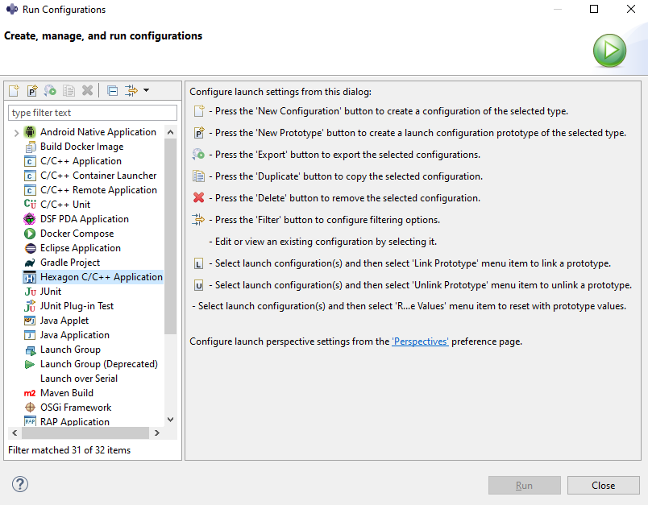
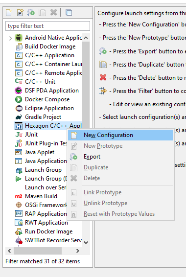

The Hexagon IDE
The Hexagon SDK includes a complete set of software development tools. The tools can be used in either of the following environments:
- The command-line interface (CLI) of the host development system
- The Hexagon integrated development environment (IDE)
This document explains how to use the tools in the Hexagon IDE. The Hexagon IDE is built on top of Eclipse. For an overview of Eclipse concepts, please follow the Eclipse CDT Documentation. Note that all instructions are given assuming you are running Eclipse under Windows but Linux paths should be used when using Eclipse under Linux
NOTE: The Hexagon IDE is not installed by default with the Hexagon SDK. To install the Hexagon IDE, either select the Eclipse checkbox when installing the Hexagon SDK, or install it separately following these instructions.
Set up the Hexagon IDE
Start the IDE
To start the IDE from a CLI shell, run the %HEXAGON_SDK_ROOT%\launch_hexagon_ide.cmd for Windows installation and $HEXAGON_SDK_ROOT/launch_hexagon_ide.sh for Linux installation.
The first time you start the IDE a dialog box appears, asking where to create your project workspace.
The workspace is where the source code (and related files and settings) for all your projects will be stored.
Specify the location where the workspace should be created.
Click OK to create the workspace at the specified location.
NOTE: Be sure to store your workspace outside the Hexagon SDK install directory – this will make life easier when you need to upgrade to a newer Hexagon IDE version.
NOTE: Workspace names cannot contain spaces. If they do, the Hexagon IDE will have problems building and executing projects.
After you launch the IDE, a welcome screen appears.
This screen provides a brief description of the IDE, along with quick links to the help systems for the Hexagon IDE, Hexagon SDK, Eclipse CDT, and Eclipse IDE.
NOTE: The Hexagon IDE and Hexagon SDK help files are obtained from the Hexagon SDK.
Close the welcome screen by clicking X that appears next to the Welcome tab in the upper left-hand corner of the window.
After you close the welcome screen, the main IDE window appears.
NOTE: The main Hexagon IDE window defaults to the Hexagon perspective (as indicated in the upper-right corner or the window).
Set IDE preferences
The Hexagon IDE has several data settings which control how it works. These settings are called preferences, and they must be properly set before you can begin using the IDE.
NOTE: If the Hexagon IDE was launched from the scripts mentioned in Start the IDE section, the preferences are set automatically, so you can skip this section.
To access the IDE preferences, choose Preferences > Hexagon from the IDE’s Window menu. The following dialog box appears:

In the Hexagon SDK path field, specify the pathname of the root directory of the Hexagon SDK.
In the Hexagon processor version drop-down list, choose the Hexagon processor version that you are developing software for. The default value is V65.
The Hexagon tools path field is preset to the pathname of the Hexagon development tools (as defined in the PATH environment variable).
Click Apply to save the changes, and then click OK to close the dialog box.
Develop your first project
Create a new project
To create a new project, start the Hexagon IDE as mentioned above section. The main IDE window should appear as shown below:
Choose New > Hexagon Project from the File menu:

The following dialog box appears:
In the Project name field, enter factorial as the name of the new project.
NOTE: Project names cannot contain spaces – if they do, the Hexagon IDE will have problems building and executing the project.
Project location defaults to the workspace. Tools location defaults to the value defined in the system environment variable, PATH. You can change either of these fields, or use the checkbox to restore the original default.
In the Hexagon SDK location field, specify the SDK location. (This field is auto-filled if the IDE was launched from the scripts mentioned in Start the IDE section.)
In the Project type drop-down list, choose Executable (.exe).
In the Architecture drop-down list, choose the required architecture.
Click Finish.
The main IDE window now displays a new project named factorial:
Creating a new project results in generating a Hello World example with a hello.c file.
New project
By default, new Hexagon Projects can be built with CMake.
To build the project, right-click the project in the Project Explorer view and choose Build Project.

This will trigger a CMake build, which can be tracked in the console view:
Project customization
Once you have confirmed that the project is successfully built, you can customize it. For example, let's add another source file factorial.cpp to the project with the factorial program code.
To do this, right-click the project in Project Explorer and choose New > Source File.

A dialog box appears, prompting you to create a new source file.
Enter the name of the source file (factorial.cpp) and select the file template (Default C++ source template).

Click on Finish button to create the new source file.
Next, copy the following code (or any other factorial implementation you want to use) to the source file, factorial.cpp. This code computes the factorial of a number passed to the program as a command-line argument.
#include <stdio.h>
#include <stdlib.h>
int fact (int n)
{
if (n<=1)
return 1;
else
return n*fact(n-1);
}
int main(int argc, char *argv[])
{
int num,factorial;
if (argc==2)
{
num=atoi(argv[1]);
printf("User input is : %d",num);
}
else
{
printf("Invalid number of arguments");
return -1;
}
if(num<0)
{
printf("Invalid input - Must be positive");
return -1;
}
factorial=fact(num);
printf("\nFactorial of %d is %d",num,factorial);
return 0;
}
Build modified project
All source files need to be added manually to the CMakeList.txt file. In the present example, update this file by adding the line below:
set(prj_sources factorial.cpp)
The default CMake settings not only build the code but also run the the project on the Hexagon Simulator. Runtime arguments are specified as follows:
Note: Use the line below in CMakeList.txt before runHexagonSim
set(HEXAGON_EXEC_CMD_OPTIONS ${HEXAGON_EXEC_CMD_OPTIONS} 5)
This will result in invoking the Hexagon simulator with the factorial binary file and passing the argument '5'
To build the project, right-click the project in Project Explorer and choose Build Project.
The status of the build can be viewed in the Console tab at the bottom of the main IDE window.
The factorial example above builds a standalone executable that does not need QuRT APIs.
Note: New projects in the Hexagon IDE are QuRT-disabled by default, which means that the QuRT libraries are not linked to the project.
Follow the steps below for QuRT enablement:
-
Right-click the project in Project Explorer and choose Properties
-
Under C/C++ Build navigate to Cmake4Eclipse, select Symbols tab
-
Edit QURT_OS flag and make value as 1
-
Press Apply to save the changes.
Now User can continue building the QuRT enabled project.
Run on simulator using the GUI
To run the project, right-click the project in Project Explorer and select Run As > Hexagon C/C++ Application.
Running the program produces the following output in the console.
Note the message Invalid number of arguments, which appears in the console output – the factorial program expects its input value to be specified as a command-line argument, and generates this error message because no argument was specified.
To fix this problem, right-click the project in Project Explorer and choose Run As > Run Configuration.
This command displays the Run Configurations dialog box, which enables you to configure the Application, simulator, program arguments, and runtime environment.
The dialog box display tabs for configuring the simulator, program arguments, and runtime environment.
(Note that the left-hand pane in the dialog box includes a newly-created runtime configuration named factorial, which appears under the item, Hexagon C/C++ Application.)
To specify the program argument for the factorial program, click the Arguments tab in the dialog box.
The factorial program expects one user argument (namely, the number whose factorial will be computed). Enter the value 5 as a program argument.
To execute the factorial program with the specified argument, click Apply and then Run at the bottom of the dialog box.
The dialog box closes and the following output (which includes the factorial output) is displayed in the console of the main IDE window.
Note: In some instances, running project do not recognize the binaries built which are located inside the project and throws below error
To fix this problem, right-click the project in Project Explorer and choose Run As > Run Configuration.
This command displays the Run Configurations dialog box below

Right click Hexagon C/C++ Application and create New Configuration below

Under C/C++ Application field browse to locate the project binaries in file system.
Now press Apply and Run.
Debug on simulator using the GUI
To debug the executable generated by the project, right-click the project in Project Explorer and choose Debug As > Hexagon C/C++ Application.
A prompt will appear asking you to Select Preferred Launcher (This dialog won't appear if Run was performed previously)

Click Use configuration specific settings and then select Standard Create Debug Process Launcher if the project tool chain is GNU. If project tool chain is LLVM select, Standard Create LLDB Debug Process Launcher.
A prompt appears asking you to confirm switching to the IDE debug perspective.

Click Yes to switch to the debug perspective.
The debug perspective enables you to perform debugging operations such as stepping, disassembly, setting breakpoints, viewing/modifying variables, and viewing registers.

For example, clicking on the Registers tab of the debug perspective displays the contents of the Hexagon processor registers.

If any debug-related information is not displayed, you can display it by choosing Show View from the Window menu.
NOTE: Each Hexagon processor thread has its own set of resources (registers, memory, etc.). If a thread is selected in the Debug tab window, the corresponding resources are displayed.
To configure the debug environment, right-click the project in Project Explorer and choose Debug As > Debug configuration.
This command displays the Debug Configurations dialog box. Using the tabs in this dialog box you can configure the debugger, program arguments, and runtime environment.

Note: In some instances, debugging project do not recognize the binaries built which are located inside the project and throws below error
To fix this problem, right-click the project in Project Explorer and choose Debug As > Debug Configuration.
This command displays the Debug Configurations dialog box below
Right click Hexagon C/C++ Application and create New Configuration below
Under C/C++ Application field browse to locate the project binaries in file system.
Now press Apply and Debug.
Import project with existing code
The previous section explained how to create a project from scratch and then run and debug it on the simulator. In this section, we will see how to import an existing project with source code, build, run and debug on simulator and target. We will import the multithreading example found in Hexagon SDK at location %HEXAGON_SDK_ROOT%\examples\multithreading.
Import Project in Hexagon IDE has two supported project types.
MakefileprojectCMakeproject
Import project as Make File Project
Import the multithreading example by right-clicking in Project Explorer and selecting Import -> Hexagon C/C++ -> Import Hexagon Project > Next.

In the next dialogue box, set the following project properties:
- Project type: –
Makefile Project - Project Name:
multithreading - Project Location:
%HEXAGON_SDK_ROOT%\examples\multithreading
Click Finish to close the window. This should result in showing the "multithreading" project in the workspace.
Build a Makefile project
-
Right-click the "multithreading" project and select Properties > C/C++ Build.
-
On the Builder Settings tab,
- set the build type to External Builder
- set the build command:
- Build command:
make
- Build command:
- remove the selection from checkbox Generate Makefiles automatically
NOTE: You can set the build flavor to Debug, Release or ReleaseG. While debugging, Debug build flavors are recommended when possible over ReleaseG, to avoid possible confusions caused by the compiler optimizer.
-
In the Behavior tab, set the flags:
- Build: BUILD=Debug DSP_ARCH=v65 hexagon
- Clean: BUILD=Debug DSP_ARCH=v65 hexagon_clean
Click Apply and Close.
-
To build the project, right-click the
multithreadingproject and select Build Project.
Import project as CMake Project
Import the "multithreading" example by right-clicking in Project Explorer and selecting Import -> Hexagon C/C++ -> Import Hexagon Project > Next.
In the next dialogue box, set the following project properties:
- Project type: –
CMake Defaults - Project Name:
multithreading - Project Location:
%HEXAGON_SDK_ROOT%\examples\multithreading
Click Finish to close the window. The Hexagon IDE will then apply the Build configuration settings to the project.
The import behavior depends on whether a CMakeLists.txt is present in the project being imported.
The IDE first looks for CMakeLists.txt file presence and performs suitable below operations.
- If the IDE finds
CMakeLists.txtfile, it Imports the project as it is and sets additional CMake build properties as below.
Note: You can set the build flavor to Debug, Release or ReleaseG following below steps:
-
Select Manage Configurations...
-
Choose desired build flavor row and press Set Active button.
You can always can update the CMake build properties above from Project->Properties->Hexagon page as below:
Press Apply to save these settings. The project is then ready for build.
-
If the IDE does not find a
CMakeLists.txtfile, it will look for ahexagon.minfile instead. -
If the IDE finds a
hexagon.minfile, it opens a prompt asking confirmation from the user to convert the project to aCMakeproject.- OK: the IDE generates MakeD to CMake build template file and sets additional CMake build properties. Resulting project is ready for Build.
- Cancel: the IDE exits Import project operation.
-
If the IDE does not find a
hexagon.minfile, it generates a HexagonCMakeLists.txtstandard file. The project is then ready to be built.
Build a CMake Project
Once a project has been imported, the user can build the project by right-clicking and choosing Build Project.
The user can check the build status in the console view as shown
Run and debug on simulator
This section explains how to run and debug the code on the simulator.
Run
The following steps show how to run the project on the Hexagon simulator.
-
Right-click the
multithreadingproject and select Run As > Run Configurations. In the Run Configurations dialog box, select Hexagon C/C++ Application and under the Main tab, set the simulator target:- C/C++ Application:
<HEXAGON_SDK_ROOT>\rtos\qurt\computev66\sdksim_bin\runelf.pbn
- C/C++ Application:

- On the Simulator tab, set the simulator arguments:
- CPU Architecture:
v66 - Miscellaneous Flags:
--simulated_returnval --usefs hexagon_Debug_toolv84_v66 --l2tcm_base 0xd800 --rtos hexagon_Debug_toolv84_v66\osam.cfg
- CPU Architecture:

- On the Arguments tab, set the program arguments:
<HEXAGON_SDK_ROOT>\libs\run_main_on_hexagon\ship\hexagon_toolv84_v66\run_main_on_hexagon_sim -- hexagon_Debug_toolv84_v66\multithreading_q.so

To execute the program, click Run.
Debug
The following steps show how to debug the project
-
Define
LLDB_HEXAGON_BOOTER_PATH:- The
LLDB_HEXAGON_BOOTER_PATHenvironment variable needs to be defined before the start of debugging on the simulator.
Right-click the project and select Properties > C/C++ Build > Environment > Add.
In the dialog-box that opens, set the environment variable:
Name:
LLDB_HEXAGON_BOOTER_PATHValue:
<HEXAGON_SDK_ROOT>\rtos\qurt\computev66\sdksim_bin\runelf.pbn
Click Apply and Close to finish setting the
LLDB_HEXAGON_BOOTER_PATHenvironment variable. - The
-
Configure the debug environment by right-clicking on project and selecting Debug As > Debug Configurations.
- On the Main tab, set C/C++ Application field as
<HEXAGON_SDK_ROOT>\libs\run_main_on_hexagon\ship\hexagon_toolv84_v66\run_main_on_hexagon_sim
- On the Main tab, set C/C++ Application field as

- If an error message
Multiple launchers available - Select oneappears, click Select one. Select the Use configuration specific settings box and choose Standard Create LLDB Debug Process Launcher.

- Under the Arguments tab, set the program arguments:
- Program arguments:
--hexagon_Debug_toolv84_v66\\multithreading_q.so
- Program arguments:

-
By default, breakpoints are set at the entry point of all functions defined in the IDL files listed in the
*_QAICIDLSvariable present in thehexagon.minfile of the current project. If run_main_on_hexagon is used to execute the DSP code without defining any IDL file, then one breakpoint is set to themain()function for simulator debugging. If you want to override this default behaviour and set a specific breakpoint to one function then follow the steps below. -
To set up a breakpoint, click the Debugger tab and set Stop on startup at to
multithreading_parallel_sum.
- On the Debugger tab click Shared libraries to select the folders which contain the shared libraries.
NOTE: If the Shared libraries path is not added or is incorrect, the debugger will not be able to halt at any of the breakpoints in your code.
This sets the breakpoint at the entry point of the function multithreading_parallel_sum. Click Apply and then Debug to start debugging the program on simulator.
- The Hexagon IDE will then prompt to switch to Debug perspective. Select Switch and the executable is launched and the breakpoint is hit at the
multithreading_parallel_sumfunction.

- The debug perspective enables you to perform debugging operations such as step, disassembly, set breakpoints, view/modify variables, and view registers.

- For example, clicking on the Registers tab of the debug perspective displays the contents of the Hexagon processor registers.
- If any debug-related information is not displayed, you can display it by choosing Show View from the Window menu.
Run and debug on target
Before you start debugging on the target using the IDE, please go through the debug page for supported targets and software requirements for debugging.
This section presents an example which shows how to debug a library project that is called by an application project:
- The shared library implements a compute engine which runs on the Hexagon processor.
- The application is an Android NDK multithreading application which offloads specific computations onto the compute engine.
The application communicates with the compute engine using FastRPC.
The compute engine will be debugged from the IDE while running on the target platform.
Build for target
This section assumes that the project was imported as a Makefile project.
To build the project, right-click on the project name, select Properties and then C/C++ Build. Under Builder settings, enter a make command such as as make BUILD=Debug DSP_ARCH=v66.
It is recommended to start by debugging a shared object built with the Debug flavor. Debugging code built with the ReleaseG flavor is supported but more challenging due to the compiler optimizations making the code harder to follow. Debugging code built with the Release flavor is not supported.
Now click the Behavior tab and set Build as hexagon and clean as hexagon_clean.
Click Apply and close to apply settings and close window.
Build the project by right-clicking on the project and selecting Build Project.
Push required binaries to target
-
To build the android binaries, run following command. Note that this command will build 64 bit version of the android side binaries. For 32 bit version, please refer to the building reference instructions.
make android VERBOSE=1 -
Use ADB as root and remount system read/write
adb root adb wait-for-device adb remount -
Push the HLOS side multithreading test executable and supporting multithreading stub library to the device
adb shell mkdir -p /vendor/bin/ adb push android_ReleaseG_aarch64/multithreading /vendor/bin/ adb shell chmod 777 /vendor/bin/multithreading adb push android_ReleaseG_aarch64/ship/libmultithreading.so /vendor/lib64/ -
Push the Hexagon Shared Object to the device's file system
adb shell mkdir -p /vendor/lib/rfsa/dsp/sdk adb push hexagon_Debug_toolv84_v66/ship/libmultithreading_skel.so /vendor/lib/rfsa/dsp/sdk -
Generate a device-specific test signature based on the device's serial number.
Follow the steps listed in the walkthrough section of the signing documentation.
NOTE: This step only needs to be done once as the same test signature will enable loading any module.
Attach to user PD process
Set breakpoint in the shared object
The imported Hexagon library project must be configured so it automatically attaches to the target process when you first start debugging it.
To do this, you need to set breakpoints in the required files in the shared library project where you want the debug session to break.
As with simulator debugging, breakpoints are set by default at the entry point of all functions defined in the IDL files listed in the *_QAICIDLS variable present in the hexagon.min file of the current project. If run_main_on_hexagon is used to execute the DSP code without defining any IDL file, no breakpoint will be set.
To set a breakpoint at particular function double-click on Run > Debug Configurations C/C++ > Hexagon C/C++ Attach to Remote Application go to Debugger tab and set the function name in the textbox associated with Stop on startup at label.
Click on Main Tab to disable auto build as shown in below.
Click Apply and then Close.
Set up debug configuration
Right-click the project in Project Explorer and choose Debug As > Hexagon Attach to Application.
The following dialog box appears:
In this example we are going to use the aDSP Subsystem for debugging. Note that the procedure is the same for the cDSP.
Shared DSP objects cannot be debugged standalone. The debugger needs the base image that initiates calls to the shared object. For the aDSP, fastrpc_shell_0 is the base image and is specified in the Executable field. Users have to pull it from device using the following command.
adb pull /vendor/dsp/adsp/fastrpc_shell_0
To debug shared object on cDSP unsigned PD, you need to specify fastrpc_shell_unsigned_3 and for signed PD, you need to specify fastrpc_shell_3. These files are present in /vendor/dsp/cdsp/.
In the Shared libraries search path field, specify the directory of shared library to be debugged during the debug session. Use File System or Workspace to search for shared libraries.
In the Target drop-down list, choose the ID of the target device to debug on. After you choose the target in the Target field, default subsystem will be selected in the Subsystem field and FastRPC processes will be listed in the Process name field. If there are no fastrpc processes running on your target,you will see the Process name field empty.
Select the subsystem you want to debug for in the Subsystem field, wait for some time to take it effect. Once your device is online, you will see selected subsystem in the Subsystem field and if there are any fastrpc processes running, they will be listed in the Process name field, otherwise you will find it empty.
NOTE: If no target ID is displayed except the simulator, this indicates the target device is not connected properly – try disconnecting the device and then reconnecting it again. If you get the error as shown below.
Then make sure your device does not get disconnected(especially after reboot) when processes are being fetched.
The field “Process name” needs to be set to the application that you will be running on the target. The application will show up in this drop-down list only if it is running on the device.
Before you proceed and hit the “Debug” button, make sure the next two steps are completed.
- Run the Android application
Before you can proceed with debugging the Hexagon library project, you will first need to run the multithreading application so it can make a call to the Hexagon library project. Run multithreading from command-line as follows
adb wait-for-device shell export LD_LIBRARY_PATH=/vendor/lib64/:$LD_LIBRARY_PATH ADSP_LIBRARY_PATH="/vendor/lib/rfsa/dsp/sdk\;/vendor/lib/rfsa/dsp/testsig;" /vendor/bin//multithreading
Now multithreading will be waiting for the debugger to connect.
-
Select the user PD process
Click Refresh icon
 and the multithreading process will be shown in the process drop-down list now and select multithreading process.
and the multithreading process will be shown in the process drop-down list now and select multithreading process.Click Debug to start the shared library debug session.
This starts the Hexagon library project, and causes it to automatically connect to the target and then prompt you to switch to the Debug perspective.
Debug
Your breakpoint will be hit now and you should see the following view.
At this point you can debug your code by stepping into or stepping over. When the debug session is completed, the multithreading output can be viewed in the console.
Page table viewer
When launched through the SDK, the Eclipse IDE includes an additional view: RTOS page table viewer.
To open the RTOS page table viewer, choose Show View > Other > Hexagon > Page Table from the Window menu. It shows page table mappings made during a debug session.